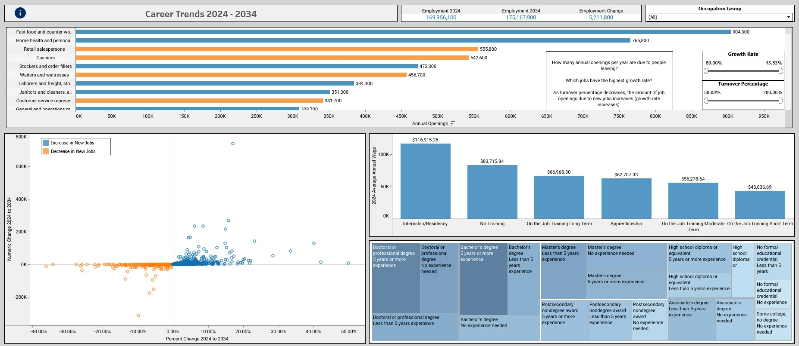
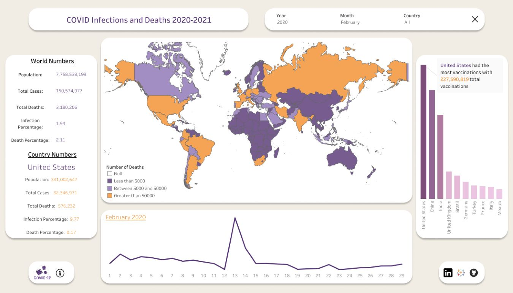
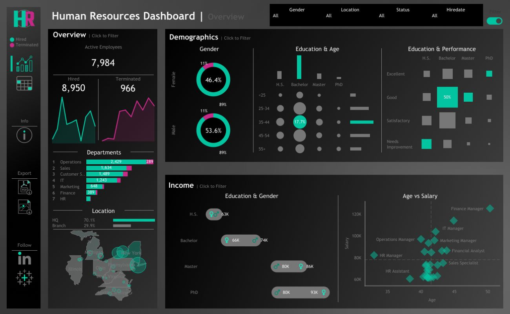
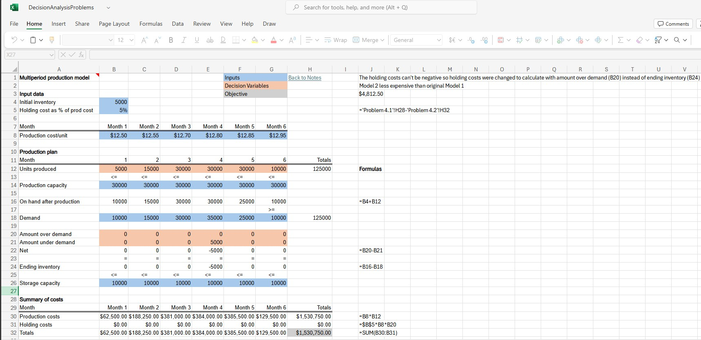

I’m Eric Lemon, a graduate student in Business Analytics with a background in healthcare, laboratory science, and business operations. I specialize in SQL, Python, Excel, and visualization tools like Tableau.
For me, data is more than numbers on a page. It’s a story waiting to be told. I enjoy digging deeper, asking ‘why’ questions that reveal the underlying causes and trends behind the data. My approach combines technical expertise with curiosity, enabling me to transform data into narratives that inspire understanding and action. Below, you’ll find a selection of projects I’ve completed through graduate coursework and individual curiosity.
Recent Project

This project was completed as the final assignment for my Data Visualization course, using data from the U.S. Bureau of Labor Statistics on occupational projections and characteristics. The goal was to identify employment trends across industries and occupations, and to present those insights through clear, engaging visuals. This project highlights my ability to transform large public datasets into meaningful, data-driven stories.
Tableau Public: Tableau Projects

This project features an interactive Tableau dashboard that visualizes key COVID-19 trends from the start of the pandemic through April 2021. It presents case counts, testing data, and vaccination progress across regions to highlight the global and national impacts over time. The goal was to create an intuitive, data-driven view of the pandemic’s trajectory through clear and engaging visual storytelling.

This human resources analytics dashboard was built in Tableau using a synthetic dataset generated by ChatGPT. The project simulates workforce data to analyze employee performance, department distribution, and retention trends. It demonstrates my ability to design effective HR dashboards and derive insights from realistic yet controlled datasets for testing and visualization practice.
Other Tableau Projects
GitHub: Python, SQL, & Excel Projects

This project utilizes MySQL to create a table, upload data, and clean and explore that data. The data was found at https://catalog.data.gov/dataset/crime-data-from-2020-to-present.

This Excel-based project includes over 25 optimization problems solved using the Solver add-in. Each problem utilizes decision and input variables to minimize or maximize specific objectives, such as cost, efficiency, or profit. Developed as part of my graduate Decision Analytics course, this collection demonstrates practical applications of linear programming and optimization modeling in business contexts.
Get in Touch!
I’m always open to new opportunities, collaborations, or simply connecting with other data professionals. Feel free to reach out with a LinkedIn message or an email through the icons on the left!

{kind=link}
{kind=link}
{kind=link}
{kind=link}